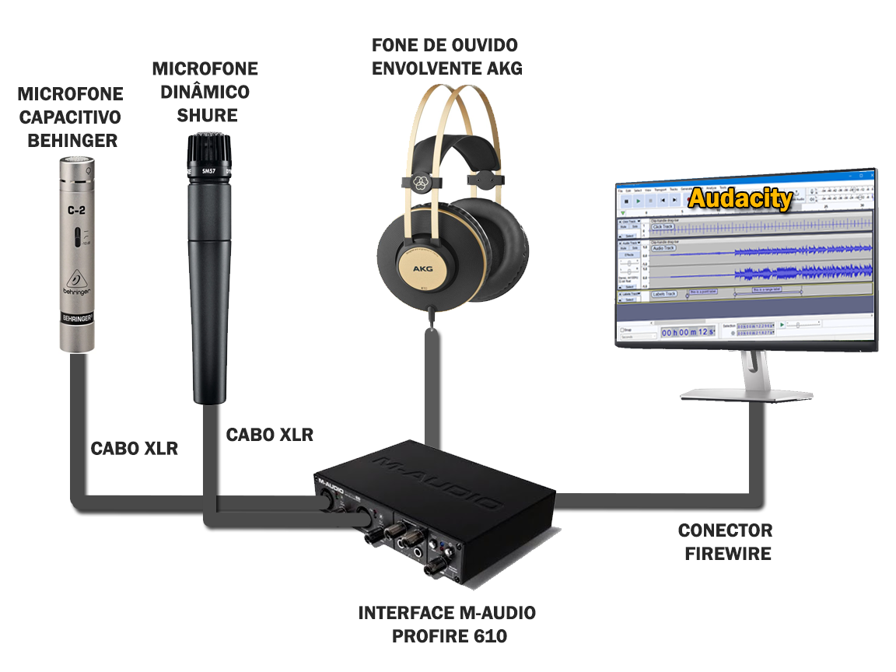
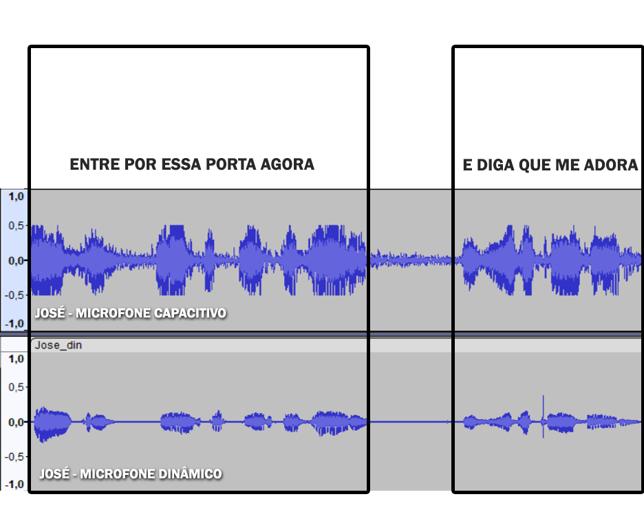
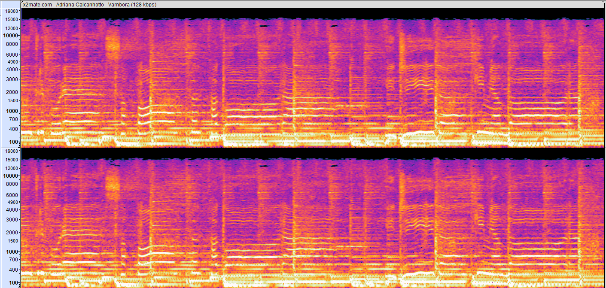
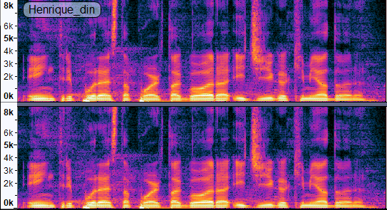
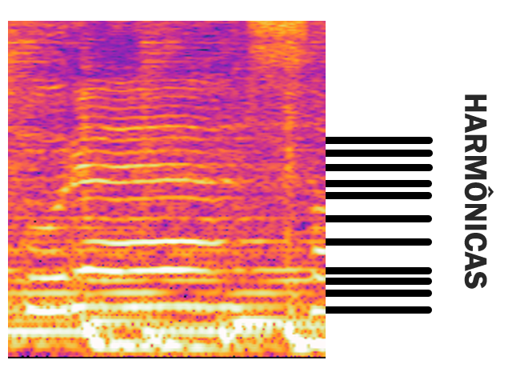
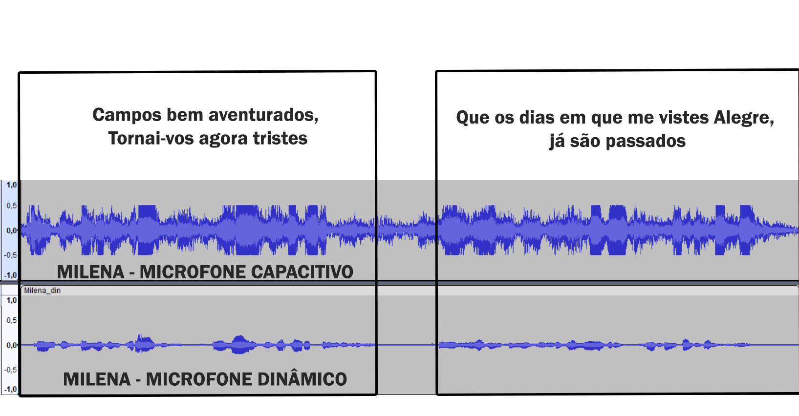
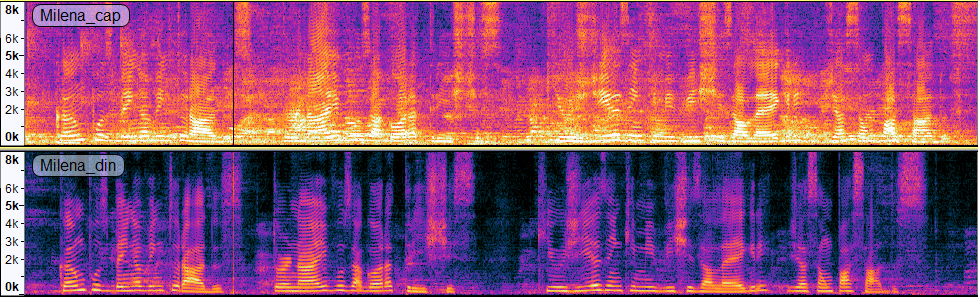
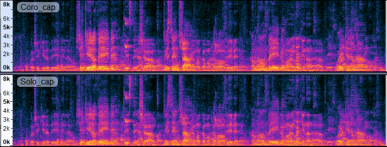

LAB 3: Análise Tempo Frequência da voz
Objetivos gerais: gravação de sinais de voz com diferentes tipos de microfone, observação de características temporais e espectrais no sinal de áudio.
Áudio Descrição:
Introdução:
O presente relatório tem como objetivo analisar fenômenos e comportamentos no sinal de voz, como tipos de microfone (capacitivo e dinâmico), envoltória de energia, pitch e espectogramas. Essas análises foram feitas sobre os sinais de voz capturados nas etapas experimentais realizadas no laboratório.Metodologia:
Para realizar a captação do sinal de voz em cada etapa experimental foi utilizada a interface M-Audio Profire 610 conectada via cabo firewire em um desktop.Além disso, dois tipos de microfones foram utilizados, a saber: um microfone capacitivo Behinger prata e um microfone dinâmico Shure preto.
Para ouvir o resultado das gravações foi utilizado o fone de ouvido AKG conectado diretamente à interface. Por fim, utilizamos o software Audacity para plotar as formas de onda e espectrogramas e realizar as análises do sinal.
A figura abaixo ilustra a montagem do setup para realização dos experimentos:

O experimento consistiu de duas partes principais.Na primeira parte cada integrante do grupo realizou a gravação de:
1) Próprio nome pronunciado pausadamente para cada sub-nome;
2) Próprio RA pronunciado dígito a dígito;
3) A frase “ENTRE POR ESSA PORTA AGORA E DIGA QUE ME ADORA” da canção “Vambora” de Adriana Calcanhotto;
4) O verso 1 da Lírica de Camões: “Campos bem aventurados, Tornai-vos agora tristes, Que os dias em que me vistes Alegre, já são passados”.
As gravações foram realizadas para cada microfone observando sempre o distanciamento dos lábios para cada tipo.
Na segunda parte os integrantes se reuniram para cantar a canção “Twist & Shout”, utilizando ambos microfones para gravar o solo (Microfone dinâmico) e coro (Microfone capacitivo). De posse das gravações, todos os registros sonoros foram analisados no software audacity a fim de analisar as diferenças entre os dois tipos de microfones.
Item 1: Apresente as gravações (com transcrição) do Nome e RA de cada integrante do grupo.
Transcrição audio 1: Milena Medeiros Svensson RA 11201811622
Transcrição audio 2: Jose Carlos Souza Jesus RA 21084015
Transcrição audio 3: Henrique Kenji Okutani RA 11201811103
Item 2: Nos itens abaixo, usar apenas uma gravação (um falante), mas em cada item o falante seja diferente.
i. Apresente uma forma de onda e o espectrograma de toda a “frase1”, para um dos microfones e um dos falantes. Analise as diferenças entre os microfones nas gravações mono da frase.
ÁUDIO DA FRASE CAPTADA PELO MICROFONE CAPACITIVO:
ÁUDIO DA FRASE CAPTADA PELO MICROFONE DINÂMICO:


É possível perceber que o sinal de voz do microfone capacitivo carrega muito mais energia no espectro de frequências do que o microfone dinâmico.
Além disso, é possível perceber que o microfone capacitivo também potencializa a captação de ruídos do ambiente, visto que há uma breve pausa no aúdio entre as frases “ENTRE POR ESSA PORTA AGORA” e “E DIGA QUE ME ADORA”.
A pausa quando observada no espectrograma do microfone dinâmico aparece como uma região escura, quase sem energia em qualquer frequência.
Contudo, a mesma região no espectrograma do microfone dinâmico aparece com níveis de energia espectral razoáveis.
O que reforça que o microfone dinâmico tem uma captação mais isolada, enquanto o microfone capacitivo consegue captar mais detalhes e nuances do som ambiente.
ii. Busque na web a "frase1" no início da música "Vambora" da Adriana Calcanhoto. Faça o espectrograma do mesmo trecho dela e compare com uma gravação de vocês.


À primeira vista é fácil perceber que o espectrograma do trecho cantado pela Adriana Calcanhoto tem muito mais energia espectral do que a frase falada normalmente.
Isto se deve primeiro ao fato de que a música contém instrumentos acompanhando a voz da cantora , o que incrementa a energia espectral.
Além disso é possível notar as harmônicas produzidas ao longa da música, tanto pela voz da cantora, quanto pelos instrumentos ou bases musicais.
É possível notar também linhas bem definidas de frequência que se sustentam por longos períodos.

iii. Apresente uma forma de onda e o espectrograma de todo “verso1”, para o outro microfone e outro falante diferente do item anterior. Analise as diferenças entre os microfones nas gravações mono deste verso.
ÁUDIO DO VERSO CAPTADO PELO MICROFONE CAPACITIVO:
ÁUDIO DO VERSO CAPTADO PELO MICROFONE DINÂMICO:


Tal como no caso da frase aqui também observamos que há uma breve pausa entre as partes “Campos bem aventurados, Tornai-vos agora tristes” e “Que os dias em que me vistes Alegre, já são passados”.
Essa pausa pode ser constatada na forma de onda do sinal captado pelo microfone dinâmico.
É possível perceber que no intervalo de tempo da pausa o espectrograma do sinal captado pelo microfone dinâmico é de baixíssima energia, com uma região predominantemente escura.
Contudo, na mesma região temporal o espectrograma do sinal captado pelo microfone capacitivo contém um nível de energia espectral razoável, o que mais uma vez evidencia a característica do microfone capacitivo em capturar mais detalhes do som ambiente e ter uma sensibilidade maior do que o microfone dinâmico.
iv. Apresente as gravações e os espectrogramas da “Música1” – Cuidado pois são estéreo.

Item 3: Em face das gravações efetuadas, como vocês definem o conceito de Prosódia? Qual a diferença entre voz falada normal, em verso, ou em música neste conceito?
A prosódia refere-se ao padrão de entonação, ritmo, ênfase e variações de tom na linguagem falada.
É um aspecto crucial da comunicação verbal, pois contribui para a expressividade, a emoção e o significado da fala.
Tendo em vista tal conceito, podemos perceber que na frase “ENTRE POR ESSA PORTA AGORA E DIGA QUE ME ADORA” a cantora coloca mais ênfase nas sílabas tônicas e prolonga por mais tempo a pronúncia de tais sílabas,
enquanto que nas gravações em verso tais sílabas são pronunciadas de forma mais “seca” e menos ritmada.
Pode-se concluir através dessa comparação que voz em música incorpora mais elementos rítmicos, elementos melódicos e variações de tom para moldar a emoção do ouviente.
Enquanto que a voz falada normal tende a conter menos variações de tom e ritmo, contendo somente as variações naturais inerentes à linguística.
Item 4: Complementar segundo as orientações da parte do relatório indicadas no notebook fornecido.
Resultados e Análises:
Através da ferramenta de análise de espectrograma foi possível verificar as diferenças na energia espectral dos sinais de voz captados através do microfone “Capacitivo” e do microfone “Dinâmico”. Evidenciou-se nos itens 2i e 2iiii que o microfone “Capacitivo” possui um nível de sensibilidade muito maior do que o microfone “Dinâmico”, percebendo-se que em momentos de pausa do interlocutor o microfone “Capacitivo” captava ruídos externos do ambiente. No item 2ii foi possível comparar as diferenças espectrais entre a voz falada e a voz em música, de forma que foi possível constatar que a voz em música apresenta muito mais energia espectral que a voz falada.
Conclusões:
A partir das informações analisadas, podemos concluir que o microfone capacitivo é mais sensível a ruídos do ambiente e mais indicado para ambientes isolados/tratados acusticamente, visto que tem uma captação mais detalhada e de mais qualidade. Já o microfone dinâmico é mais indicado para ambientes ruidosos , no qual se deseja isolar a voz do interlocutor, visto que possui uma captação menos detalhada e mais concentrada em fontes próximas. Por fim, ao compararmos o espectrograma da música original com a gravação realizada em sala o mesmo fenômeno fica evidente, uma vez que na gravação original temos os instrumentos e outras vozes compondo o coro, o que preenche o espectro com mais energia quando comparado à gravação realizada em sala.
Referências Bibliográficas: PDF - Roteiro do laboratório. Todos os passos foram realizados com base no procedimento informado no documento a seguir.;